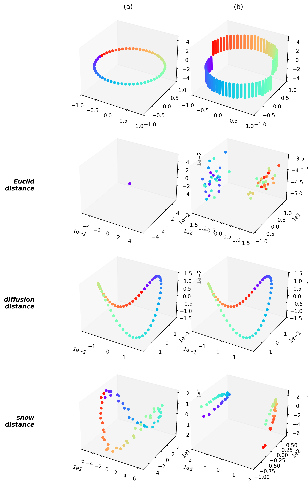
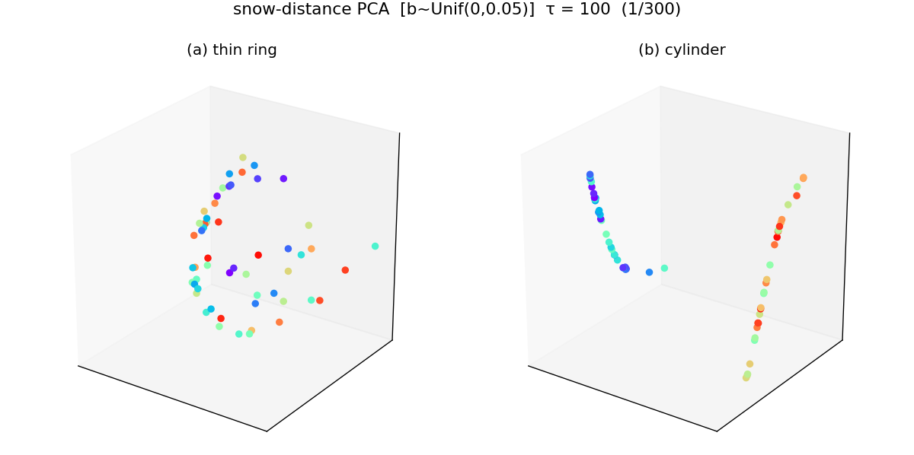
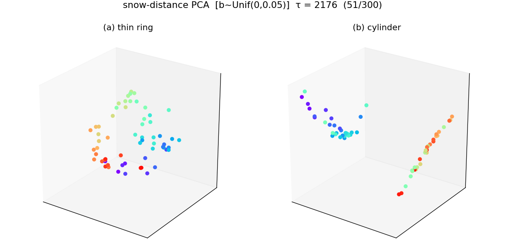
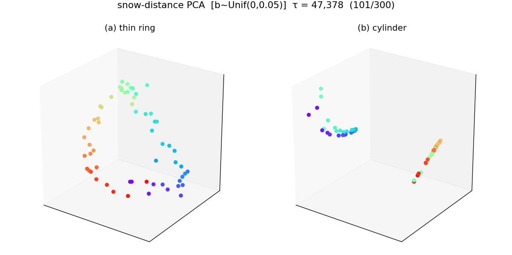
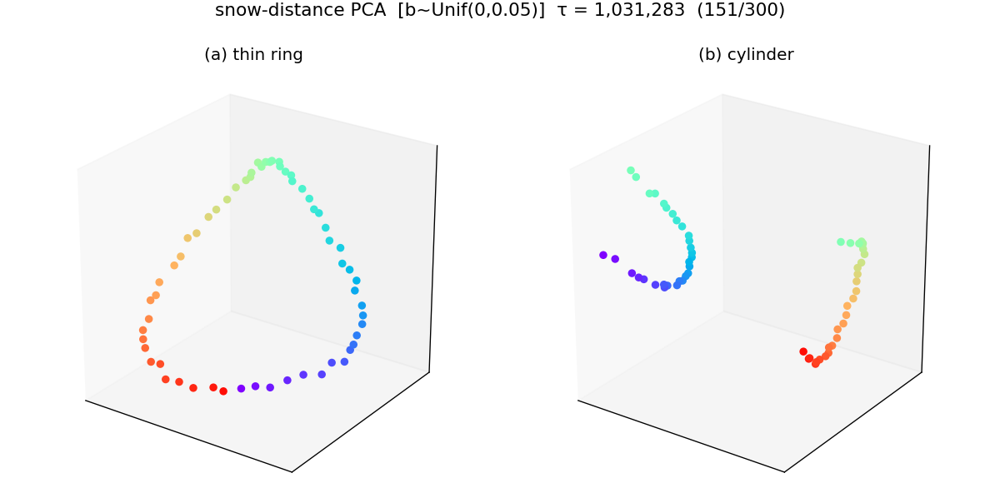
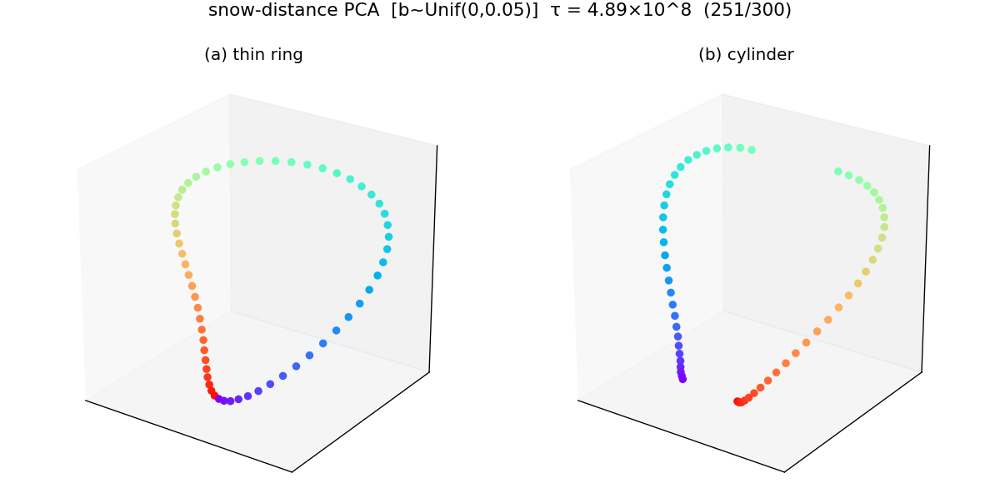
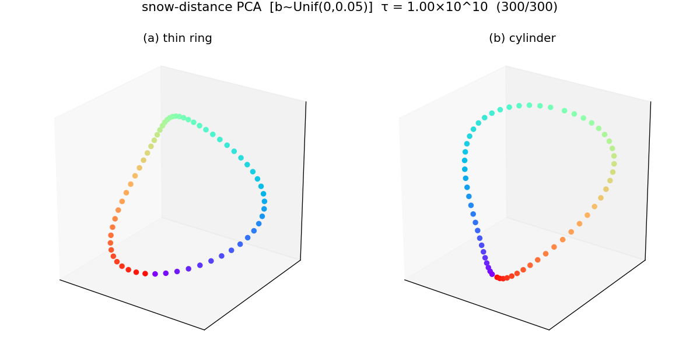
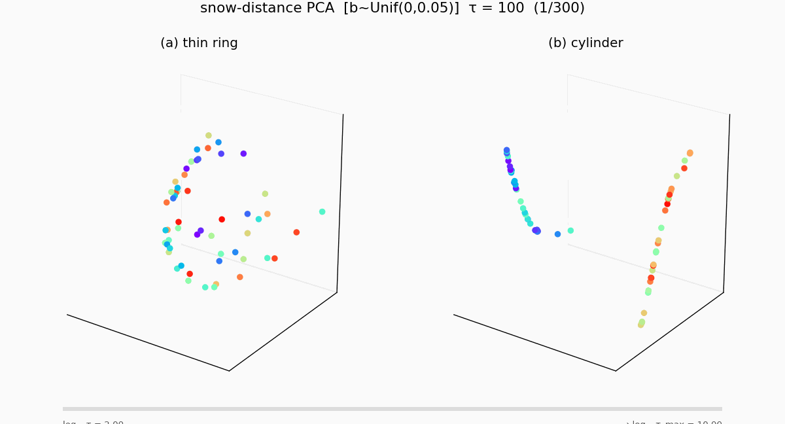

연구 ▷ HST ▷ 예제2를 100억 번 돌리면 — 유클리드에서 그래프로
0. 한 줄 요약
Example 2 의 snow-distance 임베딩을 \(\tau = 10^{10}\) (100억) 까지 돌리면, Euclidean 거리 → 잘린 링 (신호+그래프 혼합) → 순수 그래프 거리 의 3단계 전이가 깨끗하게 관찰된다.
1. 세팅
260424_예제2재현.py 의 Gaussian ring (\(n = 60\), \(y = \pm 3\)) 을 그대로 사용하되, 눈량을 매 스텝 \(b_t \sim \mathrm{Uniform}(0,\, 0.05)\) 로 랜덤 추출하는 변형 (260430_예제2재현_tau애니메이션_unifb.py).

원본 Example 2 (hst.tex Figure 5). 맨 위: (a) 신호 없는 thin ring, (b) \(y = \pm 3\) cylinder 신호. 아래 3행: Euclidean / diffusion / snow distance 의 cMDS-3D 임베딩.\(\tau\) 를 \(10^2\) 에서 \(10^{10}\) 까지 로그 스케일 300 프레임으로 체크포인트를 찍고, 각 시점의 \(\overline{\mathrm{SD}}^2(\tau)\) 행렬을 PCA-3D 임베딩하여 애니메이션으로 만들었다.
2. 세 단계
Phase I — 유클리드 지배 (\(\tau \lesssim 10^3\))
초반에는 눈이 충분히 쌓이지 않아 초기 신호 \(y = \pm 3\) 의 차이가 지배적이다. (b) cylinder 패널에서 두 클러스터가 직선으로 분리 — 사실상 \(|y_i - y_j|^2\) 만 보는 것과 같다.

\(\tau = 100\). 노이즈가 심하고 Euclidean 분리만 보인다.
\(\tau \approx 2{,}000\). 여전히 신호 차이가 지배.Phase II — 잘린 링 (\(\tau \sim 10^4 \text{–} 10^6\))
눈이 쌓이면서 그래프 구조 정보가 섞여 들어온다. (a) thin ring 에서 링이 드러나기 시작하지만 아직 끊겨 있고, (b) cylinder 에서는 두 클러스터 사이에 ring substructure 가 나타나면서 “잘린 링” 형태가 된다. 신호와 그래프 정보가 공존하는 과도기.

\(\tau \approx 47{,}000\). (a) 에서 ring 이 드러나기 시작.
\(\tau \approx 10^6\). (b) 의 두 클러스터가 각각 반원으로 펼쳐진다.Phase III — 그래프 지배 (\(\tau \gtrsim 10^8\))
\(\tau\) 가 충분히 커지면 에르고딕 평균이 초기 신호를 씻어낸다. (a) thin ring 도 (b) cylinder 도 결국 같은 완전한 링으로 수렴한다. 이 극한 거리는 신호 \(\mathbf y\) 에 무관하고 오직 \(\mathbf W\) 의 그래프 구조만 반영 — 비유클리드 거리다.

\(\tau \approx 5 \times 10^8\). 거의 닫힌 링.
\(\tau = 10^{10}\). (a) 와 (b) 모두 완전한 링으로 수렴.3. 애니메이션
전체 300 프레임 (\(\tau: 10^2 \to 10^{10}\), 로그 스케일) 애니메이션:

4. 요약
\[ \underbrace{\text{Euclidean}}_{\tau \,\lesssim\, 10^3} \;\longrightarrow\; \underbrace{\text{잘린 링 (혼합)}}_{\tau \,\sim\, 10^4 \text{–} 10^6} \;\longrightarrow\; \underbrace{\text{Graph-only 링}}_{\tau \,\gtrsim\, 10^8} \]
이론적으로 예고된 전이 — \(\overline{\mathrm{SD}}^2(\tau) \xrightarrow{\tau \to \infty} c_{ij}\) 에서 \(c_{ij}\) 가 \(\mathbf y\) 와 무관한 그래프 상수로 수렴 (수렴 증명) — 를 \(\tau = 10^{10}\) 스케일에서 눈으로 확인한 것이다.
소스: 260430_예제2재현_tau애니메이션_unifb.py. 캐시: results/numeric/260430_예제2재현_tau애니메이션_unifb.py/.